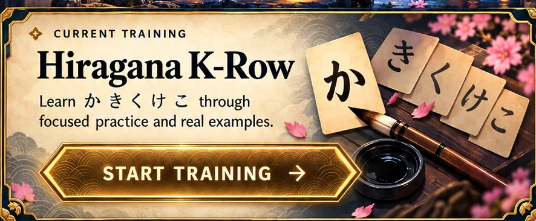
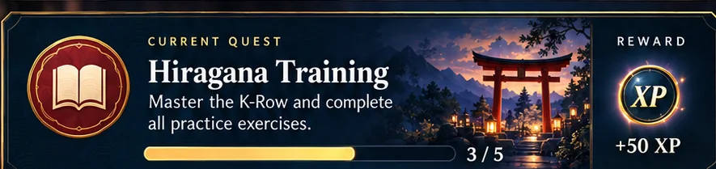
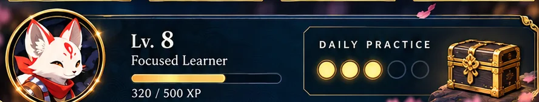
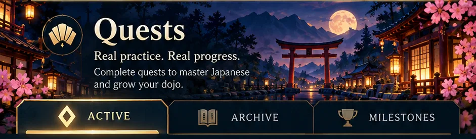
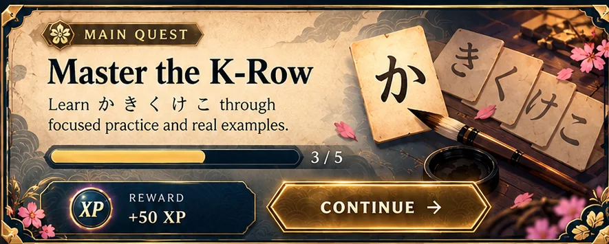

The Dojo Hall




This is a visual and interaction prototype. The artwork's levels, rewards and progress bars are sample values, not a live assessment.
Quest Log


Quest Archive
Your completed real practice sessions will eventually appear here. The sample quest cards in this concept are not synced to a quest backend.
Learning Milestones
46 / 46 base hiragana written from memory on the documented next-day test.
The skill evidence is historical. The sample XP printed on the art is not verified user progress.
Skill Tree


Sound Structure
Historically demonstratedSelect a glowing skill node to inspect its learning evidence.
Dojo Codex


Hear the K-row
Tap a character to hear its reading.
Vocabulary workshop
Associate known hiragana with authentic vocabulary and later with kanji. This chapter is a small structural preview, not a filled dictionary.
Musashi Reader
Take your existing kana knowledge into a passage from Go Rin no Sho, then inspect words and clause boundaries.

Japan Overworld
A painted atlas of Japan, connected to the interactive world-map experiment.

Enter the Japan Map
Explore Japan, zoom into Kyoto and enter the Practice Hall. The original world-map interaction is preserved in its own working experiment.
Explore overworld